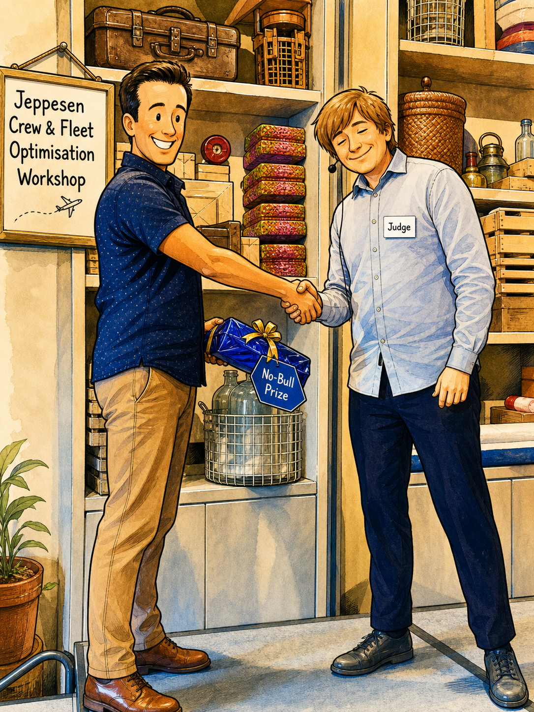
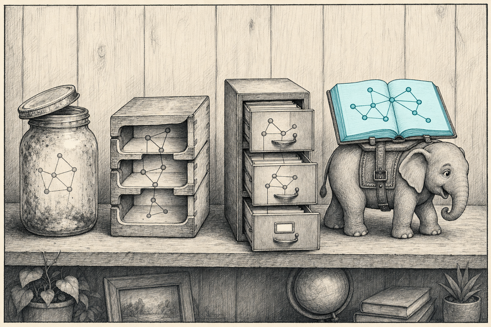

I’ve put on a bit of weight over the last couple of years despite eating less and working out more *Yes, I’m 39. It happens - but I’ve legitimately run marathons, deadlift > 2x my increasing bodyweight, and eat clean and healthy. Something is wrong in the calculus of my waistline., which my wife had the epiphany that it’s probably the anti-anxiety meds I’ve been on for…about two years. Cut to me on the phone to my GP*PCM for Americans about it on a Friday afternoon, headphones in on the call, single-crewed with our son Arthur on a sunny day. Arthur grabs my hand and drags me out the front door because the ice cream van has just turned up. (The ice cream van comes every day, and negotiations about getting ice cream happen every day.)
I’m telling the doctor my diet is genuinely excellent and I do exercise, and she’s listening patiently*whilst I have the unfounded suspicion that she doubts me. The ice cream van starts pulling away before we get to it and I bellow, at the top of my lungs, COME BACK MR ICE CREAM VAN MAN. Then I get back on the phone and carry on telling the doctor my diet is excellent.
I’m sharing this partly because it’s about to be load-bearing, and mostly because it’s a genuinely funny story that I know I need to share.
We figured out that the anti-anxiety meds were probably treating the wrong condition; what I had looked more like ADHD showing up as anxiety. The reason it matters here is because being forced to understand how my brain works and doesn’t, and seeing the effect of Adderall has made it easier to notice the pattern and thread of work that I’ve been solving in my subconscious for the last decade in various forms - and how it lead to Flexcompute Thread.
Fundamentally, I’ve realised that my career has included one long attempt to avoid pointless data entry. Not because I’m above it, but because data entry is boring, humans are error-prone, and there’s almost always a better way. I love Autofill on my iPhone - especially because we move loads as a military family and I’ve had three zip codes with 6’s, 0’s, and 1’s.
In engineering systems, it’s annoying because data and its relationship to other data has a shape. That shape got lost somewhere between two tools, or two teams, or two formats, and a human got handed the reconstruction job and lost the shape and context at the same time. That’s almost always what’s going on when you find yourself typing the same thing into a second box, or hard coding a constant, or exporting to file and re-importing into another tool.
There’s a smaller, more personal version of this realisation that I had years before any of it got technical. I’ve always tried to automate tasks that I knew didn’t interest me — because boredom produces errors, and because the challenge of figuring out an automation is fun. Data entry is the worst case: both boring and error-prone. Richer data*by which I mean data that contains more information than you see in any particular view is the opposite. Richer data is more interesting, and when there’s structure, wrong answers feel wrong, because they break the structure - which you can only do when you have the ability to observe all data together. Contrastingly, if you typo a number into a CSV or an Excel spreadsheet, the mutated data is just as happy as it would have been with the right number*not to mention that the manual transfer makes it out of date the moment you do it.
My ADHD diagnosis didn’t tell me that. It just made it obvious to me: avoiding boring error-prone work hadn’t been laziness*why copy some numbers into a spreadsheet when I can spend twice as long automating it?, it had been my brain’s natural response to a class of work that uses none of the things my brain is good at.
This is a post about that pattern, and my personal realisation. It ends, for now, at a thing called Flexcompute Thread - and I give a glimpse at why it’s magical.
I am also aware that this writing is long and not everyone*or anyone will read it in full. The act of writing this and publishing it is really for me.
The instinct in plot form
Why I sent the dashboard, not the deck.
I was annoyed during my PhD at having to embed PNG figures into a PDF, and my small act of rebellion to that fact was to spend weeks learning how to use PDF_TEX and LaTeX to ensure that typography matched the rest of the document. At ARA*where there’s actually a wonderful data graphing system for live data written in Fortran, from the 1980’s, I battled the CTO*We’re friends now, thanks Peter. about why I had to use Microsoft Word when it’s clearly the wrong tool. At IIT, I wrote and proselytised with scripts to automate grade submission to the Senate*in lieu of hand-submitting via a form. At Aurora, I authored flight-dynamics studies and was expected to put the results into PowerPoint. I refused. Not dramatically; I just kept building Plotly + Dash dashboards and sending those round when people asked for the slides. They could interrogate the data without using me as an intermediary.
I’d send both. The deck got circulated; the dashboard got bookmarked by three people and forgotten.
I realise now, that my recalcitrant objection was philosophical and topological*Not sure I have to phrase it like such a wanker, though. Data has a shape — a graph of relationships between inputs, outputs, regimes, edge cases — and a PowerPoint slide is a flat projection that loses everything that makes data rich. You can project any data onto rectilinear axes the same way you can project a globe onto a flat map. You cannot reverse this projection.
This is the first instance of a pattern that’s about to keep happening: the topology-shaped output is the better way to keep data alive and the rectilinear-shaped output is the one that most systems can absorb.
That gap between them and what it loses is the whole post.
Paradigm
Two coupled systems, one model — and a prize that didn’t move the system.
The bigger version of this, the one that mattered most professionally, was a project called Paradigm. I had been at Aurora for a couple of years and got seconded to Boeing’s Sustainability and Future Mobility team, working on Future Aircraft Conceptual Design. I was brought in to do Stability and Control and finished that quickly, but questioned “how do we know our requirements are right for design?”
Boeing has a tool called Cascade, built by the sister team of mine. Mathematically clean, built by people who knew what they were doing, and it lets you ask things like if we replaced this fleet of 737s with this hypothetical hydrogen aircraft, what happens to global aviation emissions? — over real flight data, at planetary scale. What it does, mathematically, is swap aircraft on routes and recompute. Hand it a fleet plan, get the emissions consequence. Answers that question well, and answer that people understand.
The question I kept getting stuck on, which Cascade didn’t, was the one underneath: which aircraft can fly from which airports? A hydrogen 737 can’t land where there’s no liquid hydrogen. A battery-electric regional can’t operate without charging. These factors affect the design requirements of next-gen aircraft in a way that they do not for Kerosene-powered aircraft. The bottleneck on aviation decarbonisation isn’t only fleet renewal; it’s the discrete, capital-constrained, sequenced problem of upgrading the network the fleet flies on.
So I built Paradigm. The reframe was small in words and large in consequence.
Stop optimising the fleet in isolation. Optimise the network the fleet flies on, and the fleet that network can support, jointly.
Optimise aircraft alone, you get plans that depend on infrastructure that doesn’t exist. Optimise infrastructure alone, you get upgrade lists with no connection to which aircraft will benefit. Coupled, the problem becomes: given a budget, a timeline, a fleet roadmap — which airports do you upgrade, in which order, to maximise CO2 reduction?
Which is to say: it’s a problem well-suited for MILP. Mixed-integer linear programming. Decades-old, well-understood by the OR*Operations Research community, solvable to optimality with off-the-shelf solvers if you formulate it sensibly - these solvers were originally designed to solve things like The Travelling Salesman Problem
I later than, under advisement from a specialist smarter than me*Thanks Jeremy Harris moved to CP-SAT, which enabled a LOT more that I won’t bore you with.
The really fun thing*if you’re a massive nerd like me is in coupling the aircraft problem and the infrastructure problem. Aircraft payload and range determine which routes a hypothetical aircraft can fly, which determines which airports matter to upgrade, which determines which aircraft designs make sense to develop. Run the loop both directions, jointly, and you get answers neither half gives alone. How this fed Boeing’s aircraft strategy is left as an exercise for the reader*I have presented the method in detail publicly, at academic lectures, but I don’t want to spell out how to do all this in one place.
The cost predictors weren’t a constant per airport either*after the proof of concept. The infrastructure cost was a complex set of models based on distance to existing infrastructure, water availability, renewables proximity — engineering-derived predictors from public data, turned into per-airport upgrade-cost estimates. Honestly, this was a whole load of fun - solving problems using geospatial algorithms, routing (for land and air vehicles), and large-scale search trees.
Paradigm formed the backbone of my Associate Technical Fellow (ATF)*Not Alcohol, Tobacco, and Firearms - though that would be cool.
Paradigm needed an organisation that could reward and acknowledge cross-domain work, and Boeing’s structure whilst great at building aircraft, was not set up to celebrate that at the time. Paradigm won the No-Bull Prize at the international Crew and Fleet Optimisation Workshop*CoW Workshop…COW, No-Bull, Nobel…geddit? Sigh. hosted by Jeppesen in 2025, credited as the work presented that was “most economically valuable to Boeing.” A mock reviewer in the rehearsal panel for my Associate Technical Fellow interview called it “revolutionary,” and told me I was a shoe-in for ATF.

The ATF panel didn’t see demonstrable impact to Boeing, and around the same time the project got dropped*My manager, Dom Barone, always saw the value and gave me aircover, for which I am eternally thankful - but it could only last so long.. I was furious and heartbroken. It took me a while to realise the system, not the work, was the problem.
The bit I want you to take from Paradigm isn’t the equation. It’s the same complaint as the PowerPoint deck and the doctor’s-office form, scaled up. Two coupled systems — aircraft and airports — were being analysed separately, and someone was meant to manually reconcile the results. The MILP just put the coupling in the model so a human didn’t have to - and that, compared to a solver for that purpose, a human is laughably shit at.
These two seemingly-separate things have to be solved as one big thing, and here’s how.
That sentence is the whole project.
Twenty years of trying not to be the human join operation
Trying, mildly annoyed, to put graph-shaped data somewhere a bit less wrong.
The plot stuff and Paradigm are the visible bits. Most of the work was invisible.
Twenty years of disciplined infrastructure work, no moments of insight, just one migration after another to find a less-wrong place to put graph-shaped data. Pickles, then HDF5, then SQL, then Postgres with proper foreign keys and recursive CTEs for the genuinely graph-shaped queries. None of it was a bright idea. It was being mildly annoyed at the current storage layer for not being shaped like the data was, and migrating to the next thing that was a bit less wrong. *Thanks Jeremy Harris for explaining, calmly, that pickles weren’t a database and never had been. “You’re abusing pickles” was the phrase that without context is hilarious.

I’m spelling it out at all is that I don’t want anyone reading the rest of this post to think I’m claiming exceptionalism. My understanding of infrastructure caught up to my instinct slowly, and I had many wrong steps along the way. The instinct was visible all along; the supporting tooling was the bit that took the years.
If I had to put the through-line on a t-shirt: I have spent over a decade trying not to become the join
The frustrating bit is that the tooling for not-being-the-join existed for most of those twenty years. Foreign keys are not new. Graph databases are not new. Provenance tracking is not new. What was missing wasn’t the technology; it was anyone willing to sit in the gap between the engineers who had the data and the database people who knew how to store it properly. The OR community had MILP. The CFD community had file formats. Neither group routinely picked up the other one’s tools, so the engineer in the middle ended up doing the picking up — which is, again, the same complaint. Two systems that should be coupled aren’t, and a human ends up holding the coupling. Every time I migrated a storage layer, it was because nobody else had decided that the engineering data deserved the database treatment that the rest of the world had been using for decades. It wasn’t a frontier. It was just a gap nobody had stepped into.
Vera
One filter graded the work; the other graded the thinking.
Vera Yang is the president of Flexcompute. She somehow found me through one of my interactive flight-dynamics explainers — the Plotly-not-PowerPoint instinct, in a LinkedIn post
Two organisations with different filters, looking at the same instinct in me, seeing different things. One graded the work on whether it could be priced into a deliverables list; the other graded it on whether it looked like the kind of thinking they wanted more of. This isn’t a sleight on Boeing - they’re a big and successful company for a reason.
So - thank you, Vera. And thank you, Dom - for keeping the project alive when the system around it wasn’t built to reward that kind of work.
Thread
The view is a projection. The connections are the truth.
Here’s the bit I didn’t see for a long time. The answer was in my subconscious the whole time — the network structure, the database theory, the data richness all come together. I just didn’t have the framing to name it until I was sitting in the middle of building the next thing.
Thread is what I work on now. The technical pitch is three lines.
Simulation and modelling data is connected. Every result depends on inputs, which depend on prior results, which depend on prior inputs, all the way back to the original geometry and meshing decisions. The connections aren’t an analogy — they’re literal. This number came from that run, which consumed those settings, which themselves were the output of some earlier step. Each link is specific and recoverable, in principle.
The problem is that almost no one stores it that way. Excel and pandas and CSVs and folders-of-PNGs give you the illusion of connectivity — the artefacts look related, share filenames — but the actual relationships live in someone’s head, or in a spreadsheet so complex it verges on AGI*The Pricing Spreadsheet at ARA had so many compounded formulas that it would look like a train station clackerboard when you did anything., and walk out the door at six o’clock.
Watch what happens on most teams when someone asks a straightforward traceability question:
You get engineering archaeology. Someone digs through three project folders, finds a spreadsheet from a previous version, opens a screenshot whose filename references a deleted directory, and reconstructs — by hand, badly — what should have been a single query. The reconstruction job is the data-entry job. The structure was there once. It got lost in the flatten, and data became stale, immediately.
The clean version of the failure looks like this. An engineer has a pandas DataFrame open. The columns are run IDs, lift coefficients, drag coefficients, a comment column, maybe a timestamp. Someone in another meeting asks where one row came from — what mesh, what solver settings, what geometry version, what upstream study fed it. The DataFrame doesn’t know.
If you do manage to pull all of that information into a spreadsheet or Excel, and you’re using those to compare different simulation models, then you can end up with accidental misalignment - where an excel lookup or a Pandas where tells you that your panel method has a mesh, your CFD results have an AIC, and your data row was produced by one person where it may have been many. This may seem like a trite not-really-a-problem problem, but if you don’t do these things properly (and no-one really does), then you end up in the mess that resonated when I spelled it out a couple of months ago.
Stored properly — rather than scattered across a directory of files with a naming convention nobody can quite remember — you get provenance and associativity for free. Where did this number come from and what else came from the same source both become single queries instead of three days of detective work. The flat table view people actually want to read still works. You can see, at a glance, which cells in a row are genuinely comparable, and which are sitting next to each other only because they share a row label.
The view is a projection. The connections are the truth. The flat table is a perfectly good thing to look at, and Thread will render it for you — without quietly throwing the structure away to do so. You can ask it questions a flat table can’t answer.
The same trick lights up on a plot. A scatter chart is a projection of two columns; the rest — which mesh, which solver, which run, which actor, when — has nowhere to go on the page. In Thread it stays attached to the dot. Hover the dot, ask the question, get the answer that wasn’t on the chart. And because each plot ships with a QR code and the Thread URL embedded in the PNG metadata, the chart can wander into a deck or a memo or a Slack thread and the connection back to the data still works.
That frees the user from the rectilinear constraints of pandas, polars, Excel, CSV. The original sin of computational workflows: the format you ship results in is the format you end up thinking about results in, and CSV in particular has been quietly limiting what people are willing to ask of their own data for thirty years.
There’s a second thing this buys you, harder to demonstrate in a screenshot but the bit users notice after a week of using it. What changed becomes a real question with a real answer. Two runs differ — and instead of squinting at numbers and filenames to guess why, you get why directly. That kind of query was technically possible before, in the same way that recovering the structure manually from a stack of CSVs is technically possible — but the cost per question was too high. Drop the cost per question and people start asking better questions, and that’s most of the value.
The bit that lands harder than the question, though, is the inverse: when something upstream changes, every plot that depends on it gets flagged stale, automatically, in every place it’s been used. The structural group reinforces a wing spar; the inertia tensor moves; some short-period-frequency plot from three weeks ago, sitting in two slide decks and a memo, is now answering the wrong question. With Thread holding the connections, that’s not “did anyone notice” — that’s a notification, before the next review.
Thread is the topology instinct given proper tooling, and structurally the same complaint as the PowerPoint deck refusal: data has structure, and the format you’re forcing it through doesn’t. The difference is twenty years of catching up. Refuse the flattening. Store the topology. Let the user query the actual shape of their work. Stop making humans re-enter structure the system should have kept.
The thread
One thing, twenty years, one sentence.
A short note before the close. The reason I could finally see all of this as one thing rather than as twenty separate annoyances is that I got an ADHD diagnosis and started medication a few months ago. I’ll write about that properly in the next post — there’s more to say than fits here. The relevant bit for this article is small: the diagnosis made the through-line legible, and the meds made it easier to finish the project rather than abandon it at the same point I always did before. The instinct didn’t change. The visibility did.
So.
I used to think these were separate stories. Getting annoyed at filling in my name and phone number on every visit to the GP, the PowerPoint decks, Paradigm, the database migrations, Thread. They sat in different folders in my head — one for engineering, one for software, one for personal grievance — and I treated them like unrelated things*I use the word ‘thing’ a lot, and I like it - even if it sounds inelegant. I happened to have opinions about.
They are one thing, really.
The thing is not “I like topology,” though eventually that became the technical language. The thing is simpler and more embarrassing: I don’t like data entry.
Not because I’m above it. Because data entry is usually a symptom. It means the system had structure, lost it somewhere, and handed the reconstruction job to a person. The PowerPoint deck flattens a graph and asks the audience to imagine the connections back. The paper form ignores a database and asks the new patient to retype it. The Cascade-shaped fleet model and the airport-shaped infrastructure model sit in different rooms and ask a strategist to hold the coupling in their head. The CSV strips the provenance and asks an engineer to reconstruct it from filenames three months later. Different systems, same move. Drop the structure. Make a human put it back.
Thread is the latest and most literal version of that refusal. Store the shape. Preserve the provenance. Let the flat view be a view, not the truth. Stop making humans re-enter structure the system should have kept.
I don’t think this is a particularly profound observation. It is, if anything, the opposite — most of the people I admire technically have an instinctive version of the same complaint, and the tooling response (databases, type systems, dependency graphs, build tools, even the version-control history of a file) is largely the same response across very different fields. The bit that took me two decades wasn’t having the instinct. It was finding the right place to put it down. Plot dashboards were a place to put it down for a project. Paradigm was a place to put it down for a year. Postgres was a place to put it down with decent structure. Thread is, I think, the right place to put it down for the work I want to spend the rest of my career on.
That is the thread. It was there the whole time.